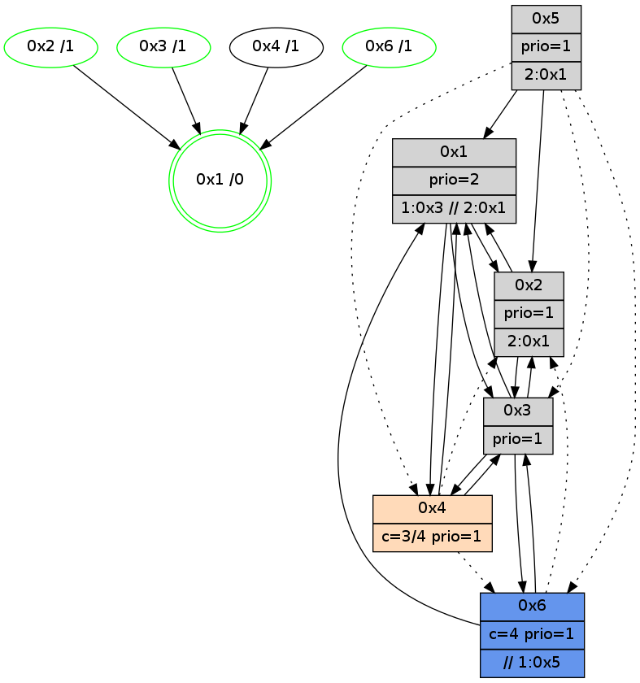

>> << IDX [start] -100 -25 -5 +0 +5 +25 +100 [890.373314142]
 Previous packets
885.000084 beacon04(adaf) #0 coord=01,02,05,03,04,06 cycle=432.0ms assoc 64 b2 f5
885.010083 beacon06(adaf) #0 coord=01,02,05,03,04,06 cycle=432.0ms assoc 64 c6 e9
885.021786 [Hello(4): seq=690 sym=1,3 asym=6 sysInfo=hasWarning stat=1:10,14,2,0/3:10,7,3,4/6:0,3,0,0]
885.026165 [Hello(1): seq=589 sym=2,4,6 sysInfo=hasWarning,coloring-mode-on,ColoringModeRequestCalled stat=2:9,4,4,1/4:0,0,1,0/6:10,7,4,2]
885.028546 [STC(1) #0.100 new-neigh,tree-change,inconsistent-stability,stable,to-color d=0]
----------------------------------------------------------------------
885.452230 beacon01(adaf) #0 coord=01,02,05,03,04,06 cycle=432.0ms assoc
-- color-indic=1 64 bb 41
885.462191 beacon02(adaf) #0 coord=01,02,05,03,04,06 cycle=432.0ms assoc 64 ea be
885.472191 beacon05(adaf) #0 coord=01,02,05,03,04,06 cycle=432.0ms assoc 64 4c 94
885.482193 beacon03(adaf) #0 coord=01,02,05,03,04,06 cycle=432.0ms assoc 64 d0 b0
885.492193 beacon04(adaf) #0 coord=01,02,05,03,04,06 cycle=432.0ms assoc 64 76 9a
885.502194 beacon06(adaf) #0 coord=01,02,05,03,04,06 cycle=432.0ms assoc 64 02 86
885.513729 [STC(4)->1 #0.100 new-neigh,tree-change,inconsistent-stability,to-color d=1]
885.518073 [Color(1) seq=116 @0:0 prio=2 >1.@3,1.@5 >>2.@1 c=1,4,6;0,2,3,5]
885.520153 [Color(2) seq=88 @0:0 prio=1 >2.@1,1.@3 c=4;0,1,2,5,6]
885.524349 [STC(3)->1 #0.100 new-neigh,tree-change,inconsistent-stability,stable,to-color d=1]
885.526632 [Color(3) seq=74 @0:0 prio=1 c=4;0,1,2,5,6]
----------------------------------------------------------------------
885.944338 beacon01(adaf) #0 coord=01,02,05,03,04,06 cycle=432.0ms assoc
-- color-indic=1 64 f6 46
885.954299 beacon02(adaf) #0 coord=01,02,05,03,04,06 cycle=432.0ms assoc 64 a7 b9
885.964299 beacon05(adaf) #0 coord=01,02,05,03,04,06 cycle=432.0ms assoc 64 01 93
885.974299 beacon03(adaf) #0 coord=01,02,05,03,04,06 cycle=432.0ms assoc 64 9d b7
885.984299 beacon04(adaf) #0 coord=01,02,05,03,04,06 cycle=432.0ms assoc 64 3b 9d
885.994299 beacon06(adaf) #0 coord=01,02,05,03,04,06 cycle=432.0ms assoc 64 4f 81
886.006014 [Hello(4): seq=691 sym=1,3 asym=6 sysInfo=hasWarning stat=1:11,15,3,0/3:11,8,4,4/6:0,4,0,0]
886.018236 [Hello(1): seq=590 sym=2,4,6 sysInfo=hasWarning,coloring-mode-on,ColoringModeRequestCalled stat=2:9,4,4,1/4:0,0,1,0/6:10,7,4,2]
----------------------------------------------------------------------
886.436447 beacon01(adaf) #0 coord=01,02,05,03,04,06 cycle=432.0ms assoc
-- color-indic=1 64 32 29
886.446408 beacon02(adaf) #0 coord=01,02,05,03,04,06 cycle=432.0ms assoc 64 63 d6
886.456407 beacon05(adaf) #0 coord=01,02,05,03,04,06 cycle=432.0ms assoc 64 c5 fc
886.466409 beacon03(adaf) #0 coord=01,02,05,03,04,06 cycle=432.0ms assoc 64 59 d8
886.476409 beacon04(adaf) #0 coord=01,02,05,03,04,06 cycle=432.0ms assoc 64 ff f2
886.486411 beacon06(adaf) #0 coord=01,02,05,03,04,06 cycle=432.0ms assoc 64 8b ee
886.498795 [Color(2) seq=89 @0:0 prio=1 >2.@1,1.@3 c=4;0,1,2,5,6]
886.500399 [Color(1) seq=117 @0:0 prio=2 >1.@3,1.@5 >>2.@1 c=1,4,6;0,2,3,5]
886.502571 [Color(6) seq=117 @0:0 color=4 prio=1 >>1.@5 c=0,1,2,5,6;3]
886.504130 [Hello(3): seq=689 sym=6,4,1 sysInfo=hasWarning stat=6:9,10,4,0/4:0,0,2,0/1:1,0,14,1]
886.507801 [Color(3) seq=75 @0:0 prio=1 c=4;0,1,2,5,6]
----------------------------------------------------------------------
886.928555 beacon01(adaf) #0 coord=01,02,05,03,04,06 cycle=432.0ms assoc
-- color-indic=1 64 7e 99
886.938516 beacon02(adaf) #0 coord=01,02,05,03,04,06 cycle=432.0ms assoc 64 2f 66
886.948515 beacon05(adaf) #0 coord=01,02,05,03,04,06 cycle=432.0ms assoc 64 89 4c
886.958515 beacon03(adaf) #0 coord=01,02,05,03,04,06 cycle=432.0ms assoc 64 15 68
886.968516 beacon04(adaf) #0 coord=01,02,05,03,04,06 cycle=432.0ms assoc 64 b3 42
886.978517 beacon06(adaf) #0 coord=01,02,05,03,04,06 cycle=432.0ms assoc 64 c7 5e
886.989748 [Hello(1): seq=591 sym=2,4,3 sysInfo=hasWarning,coloring-mode-on,ColoringModeRequestCalled stat=2:9,4,4,1/4:0,0,1,0/3:0,1,0,0]
886.993899 [Hello(4): seq=692 sym=1,3 asym=6 sysInfo=hasWarning stat=1:12,0,3,0/3:12,9,4,4/6:0,5,0,0]
886.995664 [Hello(2): seq=1180 sym=1,3 sysInfo=hasWarning stat=1:1,12,12,0/3:9,15,5,1]
----------------------------------------------------------------------
887.420665 beacon01(adaf) #0 coord=01,02,05,03,04,06 cycle=432.0ms assoc
-- color-indic=1 64 ba f6
887.430625 beacon02(adaf) #0 coord=01,02,05,03,04,06 cycle=432.0ms assoc 64 eb 09
887.440626 beacon05(adaf) #0 coord=01,02,05,03,04,06 cycle=432.0ms assoc 64 4d 23
887.450627 beacon03(adaf) #0 coord=01,02,05,03,04,06 cycle=432.0ms assoc 64 d1 07
887.460626 beacon04(adaf) #0 coord=01,02,05,03,04,06 cycle=432.0ms assoc 64 77 2d
887.470627 beacon06(adaf) #0 coord=01,02,05,03,04,06 cycle=432.0ms assoc 64 03 31
887.482998 [Color(2) seq=90 @0:0 prio=1 >2.@1,1.@3 c=4;0,1,2,5,6]
887.484722 [Hello(3): seq=690 sym=6,4,1,2 sysInfo=hasWarning stat=6:9,10,4,0/4:0,0,2,0/1:2,0,14,1/2:0,0,0,0]
887.486802 [Color(6) seq=118 @0:0 color=4 prio=1 >>1.@5 c=0,1,2,5,6;3]
887.489589 [Color(3) seq=76 @0:0 prio=1 c=4;0,1,2,5,6]
887.492345 [STC(1) #0.101 new-neigh,tree-change,inconsistent-stability,stable,to-color d=0]
887.494285 [Color(1) seq=118 @0:0 prio=2 >1.@3,1.@5 >>2.@1 c=1,4,6;0,2,3,5]
----------------------------------------------------------------------
887.912773 beacon01(adaf) #0 coord=01,02,05,03,04,06 cycle=432.0ms assoc
-- color-indic=1 64 e4 97
887.922733 beacon02(adaf) #0 coord=01,02,05,03,04,06 cycle=432.0ms assoc 64 b5 68
887.932734 beacon05(adaf) #0 coord=01,02,05,03,04,06 cycle=432.0ms assoc 64 13 42
887.942734 beacon03(adaf) #0 coord=01,02,05,03,04,06 cycle=432.0ms assoc 64 8f 66
887.952734 beacon04(adaf) #0 coord=01,02,05,03,04,06 cycle=432.0ms assoc 64 29 4c
887.962735 beacon06(adaf) #0 coord=01,02,05,03,04,06 cycle=432.0ms assoc 64 5d 50
887.974339 [STC(3)->1 #0.101 new-neigh,tree-change,inconsistent-stability,stable,to-color d=1]
887.978353 [Hello(4): seq=693 sym=1,3 asym=2,6 sysInfo=hasWarning stat=1:12,1,4,0/3:13,10,4,4/2:0,0,0,0/6:0,6,0,0]
887.981886 [STC(2)->1 #0.101 new-neigh,tree-change,inconsistent-stability,stable,to-color d=1]
887.983800 [Hello(6): seq=606 sym=3,1 asym=2 sysInfo=hasWarning,coloring-mode-on,ColoringModeIndicationCalled stat=3:7,14,3,0/1:13,9,2,1/2:0,0,0,0]
887.985859 [STC(4)->1 #0.101 new-neigh,tree-change,inconsistent-stability,to-color d=1]
887.989885 [STC(6)->1 #0.101 new-neigh,tree-change,inconsistent-stability,stable,to-color d=1]
887.991733 [Hello(1): seq=592 sym=2,4,3 sysInfo=hasWarning,coloring-mode-on,ColoringModeRequestCalled stat=2:10,4,4,1/4:0,0,1,0/3:0,1,0,0]
----------------------------------------------------------------------
888.404883 beacon01(adaf) #0 coord=01,02,05,03,04,06 cycle=432.0ms assoc
-- color-indic=1 64 20 f8
888.414844 beacon02(adaf) #0 coord=01,02,05,03,04,06 cycle=432.0ms assoc 64 71 07
888.424844 beacon05(adaf) #0 coord=01,02,05,03,04,06 cycle=432.0ms assoc 64 d7 2d
888.434845 beacon03(adaf) #0 coord=01,02,05,03,04,06 cycle=432.0ms assoc 64 4b 09
888.444845 beacon04(adaf) #0 coord=01,02,05,03,04,06 cycle=432.0ms assoc 64 ed 23
888.454845 beacon06(adaf) #0 coord=01,02,05,03,04,06 cycle=432.0ms assoc 64 99 3f
888.467240 [Color(2) seq=91 @0:0 prio=1 >2.@1,1.@3 c=4;0,1,2,5,6]
888.468936 [Hello(3): seq=691 sym=6,4,1,2 sysInfo=hasWarning stat=6:10,10,5,0/4:1,0,3,0/1:3,1,15,1/2:0,0,1,0]
888.471026 [Color(6) seq=119 @0:0 color=4 prio=1 >>1.@5 c=0,1,2,5,6;3]
888.473803 [Color(3) seq=77 @0:0 prio=1 c=4;0,1,2,5,6]
888.477101 [Color(1) seq=119 @0:0 prio=2 >1.@3,1.@5 >>2.@1 c=1,4,6;0,2,3,5]
----------------------------------------------------------------------
888.896992 beacon01(adaf) #0 coord=01,02,05,03,04,06 cycle=432.0ms assoc
-- color-indic=1 64 6c 48
888.906952 beacon02(adaf) #0 coord=01,02,05,03,04,06 cycle=432.0ms assoc 64 3d b7
888.916953 beacon05(adaf) #0 coord=01,02,05,03,04,06 cycle=432.0ms assoc 64 9b 9d
888.926953 beacon03(adaf) #0 coord=01,02,05,03,04,06 cycle=432.0ms assoc 64 07 b9
888.936954 beacon04(adaf) #0 coord=01,02,05,03,04,06 cycle=432.0ms assoc 64 a1 93
888.946954 beacon06(adaf) #0 coord=01,02,05,03,04,06 cycle=432.0ms assoc 64 d5 8f
888.958678 [Hello(4): seq=694 sym=1,3 asym=2,6 sysInfo=hasWarning stat=1:13,2,4,0/3:14,11,4,4/2:0,0,0,0/6:0,7,1,0]
888.961782 [Hello(1): seq=593 sym=2,4,3 sysInfo=hasWarning,coloring-mode-on,ColoringModeRequestCalled stat=2:10,4,4,1/4:0,0,1,0/3:0,1,0,0]
----------------------------------------------------------------------
889.389099 beacon01(adaf) #0 coord=01,02,05,03,04,06 cycle=432.0ms assoc
-- color-indic=1 64 a8 27
889.399059 beacon02(adaf) #0 coord=01,02,05,03,04,06 cycle=432.0ms assoc 64 f9 d8
889.409062 beacon05(adaf) #0 coord=01,02,05,03,04,06 cycle=432.0ms assoc 64 5f f2
889.419060 beacon03(adaf) #0 coord=01,02,05,03,04,06 cycle=432.0ms assoc 64 c3 d6
889.429062 beacon04(adaf) #0 coord=01,02,05,03,04,06 cycle=432.0ms assoc 64 65 fc
889.439061 beacon06(adaf) #0 coord=01,02,05,03,04,06 cycle=432.0ms assoc 64 11 e0
889.450823 [Color(1) seq=120 @0:0 prio=2 >1.@3,1.@5 >>2.@1 c=1,4,6;0,2,3,5]
889.453288 [Hello(3): seq=692 sym=6,4,1,2 sysInfo=hasWarning stat=6:11,10,5,0/4:1,0,3,0/1:4,2,15,1/2:0,0,1,0]
889.455124 [Color(2) seq=92 @0:0 prio=1 >2.@1,1.@3 c=4;0,1,2,5,6]
889.456966 [Color(6) seq=120 @0:0 color=4 prio=1 >>1.@5 c=0,1,2,5,6;3]
889.459549 [Color(3) seq=78 @0:0 prio=1 c=4;0,1,2,5,6]
----------------------------------------------------------------------
889.881207 beacon01(adaf) #0 coord=01,02,05,03,04,06 cycle=432.0ms assoc
-- color-indic=1 64 e5 20
889.891170 beacon02(adaf) #0 coord=01,02,05,03,04,06 cycle=432.0ms assoc 64 b4 df
889.901168 beacon05(adaf) #0 coord=01,02,05,03,04,06 cycle=432.0ms assoc 64 12 f5
889.911169 beacon03(adaf) #0 coord=01,02,05,03,04,06 cycle=432.0ms assoc 64 8e d1
889.921169 beacon04(adaf) #0 coord=01,02,05,03,04,06 cycle=432.0ms assoc 64 28 fb
889.931168 beacon06(adaf) #0 coord=01,02,05,03,04,06 cycle=432.0ms assoc 64 5c e7
889.942901 [Hello(4): seq=695 sym=1,3 asym=2,6 sysInfo=hasWarning stat=1:14,3,4,0/3:15,12,4,4/2:0,1,0,0/6:0,8,1,0]
889.947252 [Hello(1): seq=594 sym=2,4,3 sysInfo=hasWarning,coloring-mode-on,ColoringModeRequestCalled stat=2:10,5,4,1/4:0,0,1,0/3:1,2,0,0]
889.950593 [STC(1) #0.102 new-neigh,tree-change,inconsistent-stability,stable,to-color d=0]